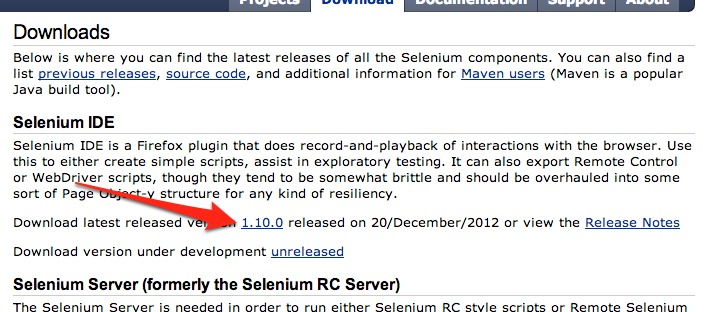
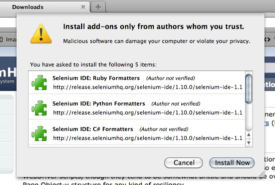

Hi!
- Technical Architect, LBi NYC
- Lead Developer, WorkHabit
@drnikki
In the next hour
- Automated Testing
- Why it's a Good Thing
- First steps
...for
- site builders
- beginner site administrators
- beginner module builders
- weary project managers
Types of testing
- unit tests
- smoke tests
- regression tests
- black (or white) box testing
Automated Testing
Test automation is the use of software to control the execution of tests, the comparison of actual outcomes to predicted outcomes, the setting up of test preconditions, and other test control and test reporting functions. Commonly, test automation involves automating a manual process already in place...
Selenium
- browser automation
- via script on server
- via IDE running locally
Download!
http://seleniumhq.org/download/

...and install

and then restart firefox
Things We Can Test
- menus
- contexts
- panels
- image styles
- blocks
- views
Is this worth writing a test for?
yes.
http://sandcamp2013.drnikki.org/